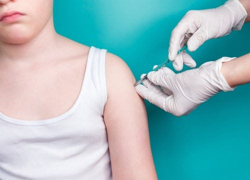
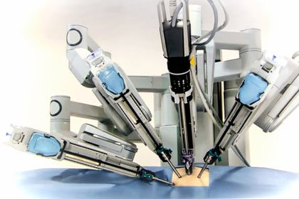
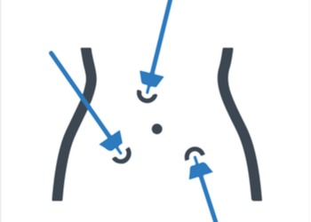

Σεζόν 1 · 13 επεισόδια
1 Γενικά για τον ιό HPV2 λεπτά · 278 λέξεις
Ο ιός του HPV (human papillovirus ) είναι ο ιός των ανθρωπίνων κονδυλωμάτων και είναι πρακτικά η αιτιολογία του καρκίνου του τραχήλου της μήτρας στις γυναίκες.
Επειδή όμως ακριβώς γίνεται μοιραία η αναφορά αυτή πρέπει να ξεκαθαρίσουμε και να απομυθοποιήσουμε το γεγονός αυτό που δημιουργεί ανώφελο στρες στις γυναίκες ασθενείς καθώς το συνδέουν απόλυτα με τη σοβαρή παθολογία του καρκίνου στον τράχηλο, ενώ η πραγματικότητα απέχει πολύ.
Οι γυναίκες που ανέπτυξαν καρκίνο στον τράχηλο παγκόσμια είναι περίπου 250.000 ασθενείς και βαίνουν μειούμενες λόγω της πρωτογενούς πρόληψης, ενώ περίπου 80% του πληθυσμού του πλανήτη θα μολυνθεί από HPV, χωρίς βέβαια να αναπτύξει κάποια σοβαρή βλάβη.
Η μόλυνση λοιπόν από τον ιό αποτελεί απαραίτητη αλλά όχι βέβαια και ικανή συνθήκη για την ανάπτυξη κάποιας κακοήθειας στον γυναικείο τράχηλο. Πρέπει συνεπώς να ηρεμήσουν οι γυναίκες αλλά όχι και να εφησυχάζονται, καθώς το πιο σημαντικό για την υγεία τους είναι ο απλός έλεγχος στον γυναικολόγο.
Ουσιαστικά ο ιός των κονδυλωμάτων είναι μια μεγάλη κατηγορία ιών, τουλάχιστον 40 και πλέον διαφορετικοί υπότυποι (ενώ κάποιοι συγγραφείς αναφέρονται σε πολύ παραπάνω, ίσως πάνω και από 100 τύπους ) και ανήκουν στην κατηγορία των RNA ιών.
Δεν διαθέτουν δηλαδή DNA στο κύτταρο τους, όπως ακριβώς και η συναφής κατηγορία των κορονοϊού, με αποτέλεσμα να μην μπορούν να διατηρηθούν ελεύθεροι στο εξωτερικό περιβάλλον, παρά για λίγο χρόνο, και επιζητούν ¨ξενιστή¨, δηλαδή ένα οργανισμό που να διεισδύσουν στο κύτταρο του σαν παράσιτα, δημιουργώντας μια λοίμωξη, που στην περίπτωση του HPV είναι ήπια και άνευ συμπτωμάτων και για το λόγο αυτό υποδιαγιγνώσκεται και είναι απαραίτητη η προληπτική ιατρική, ο έλεγχος δηλαδή του τραχήλου στο γυναικολόγο, όπου με το τεστ Παπανικολάου θα βρεθεί η αρχόμενη λοίμωξη.
2 Είδη HPV Λοίμωξης1 λεπτά · 144 λέξεις
Από τις πολλές υποκατηγορίες του HPV, μόνο δύο, δηλαδή ο HPV 6 και 11 είναι υπεύθυνοι για την πιο γνωστή και φανερή λοίμωξη κονδυλωμάτων στα εξωτερικά γεννητικά όργανα ( αιδοίο και στο πέος ).
Αυτοί οι ιοί δημιουργούν τις εμφανείς και κάποιες φορές εντυπωσιακές εστίες σαν κρεατοελιές ( ανθοκραμβοειδείς εντοπίσεις ) που αφορούν το πέος, τους όρχεις και τη βουβωνική περιοχή στους άνδρες και το αιδοίο, τον κόλπο και τον πρωκτό στις γυναίκες.
Οι τοπικές αυτές εντοπίσεις γίνονται συνήθως εύκολα αντιληπτές με το μάτι, συχνά έχουν αυξητικές και επεκτατικές τάσεις στο γειτονικό δέρμα και όλοι οι ασθενείς καταλήγουν να ζητήσουν βοήθεια, συχνότερα στο δερματολόγο. Εφαρμόζονται τοπικές θεραπείες υπό μορφή τοπικής κρέμας και επι παραμονής των εστιών γίνεται εξάχνωση αυτών είτε με υγρό άζωτο (κρυοθεραπεία) ή με εφαρμογή ρεύματος και καυτηρίαση πιο συχνά, ενώ η τελική λύση είναι η εξάχνωση με laser CO2.
3 HPV και τράχηλος μήτρας1 λεπτά · 168 λέξεις
Οι πιο επικίνδυνες όμως εντοπίσεις του HPV δεν αφορούν τα εξωτερικά γεννητικά όργανα και δεν γίνονται αντιληπτές με το γυμνό μάτι. Αφορούν την συντριπτική πλειοψηφία των ιών HPV και είναι αυτοί που προκαλούν βλάβες στο γυναικείο τράχηλο, αποτελώντας το γενεσιουργό αίτιο του καρκίνου του τραχήλου στις γυναίκες.
Οι άντρες είναι ασυμπτωματικοί φορείς των ιών αυτών και δεν εμφανίζουν κάποια ορατή βλάβη ενώ οι γυναίκες επίσης δεν έχουν ορατές εντοπίσεις στο αιδοίο και στον κόλπο, ενώ ο μόνος τρόπος να ανιχνευθεί η μόλυνση είναι το τεστ Παπανικολάου και η κολποσκόπηση.
Έτσι γίνεται επιτελικής σημασίας ο προληπτικός έλεγχος στο γυναικολόγο που τόσο στις γυναίκες αναπαραγωγικής ηλικίας, όσο και στις μεγαλύτερες, πρέπει να είναι ετήσιος εκτός αν χρειάζεται συχνότερη παρακολούθηση λόγω βλαβών του ιού.
Δεν κάνουμε βέβαια τεστ σε γυναίκες νεότερες που δεν έχουν ακόμα συνάψει σεξουαλικές σχέσεις και είμαστε πάντα φειδωλοί σε βλάβες που εντοπίζονται σε πολύ νέα κορίτσια, κάτω των 20 ετών, καθώς έχουν ασθενέστερο ανοσολογικό σύστημα και χρειάζονται μεγαλύτερη υπομονή στην παρακολούθηση και λιγότερες επεμβατικές τεχνικές θεραπείας.
4 Διαγνωστικά τεστ HPV – Τεστ Παπ1 λεπτά · 244 λέξεις
Το απλό τεστ Παπανικολάου είναι ο καίριος τρόπος ανίχνευσης και παρακολούθησης των HPV λοιμώξεων και πρέπει να γίνεται ετήσια σε όλες σχεδόν τις ηλικίες, μετά την έναρξη των σεξουαλικών επαφών .
Σε αυτό συλλέγεται από τον κλινικό γυναικολόγο επίχρισμα με ειδικά ¨ξυλάκια ¨που στρώνεται σε πλακάκια γυάλινα και αποστέλλεται στον κυτταρολόγο, τον ειδικό δηλαδή γιατρό που μελετάει στο μικροσκόπιο την ανατομία και τις δυνητικές βλάβες των κυττάρων κόλπου και τραχήλου.
Από εκεί συλλέγονται οι πρώτες πληροφορίες για την υγεία και ανατομία των κυττάρων του γεννητικού συστήματος και ελέγχεται ο πυρήνας και το κυτταρόπλασμα τους .
Όπως αναφέρθηκε, καθώς ο ιός δεν επιβιώνει παρά ελάχιστα στο εξωτερικό περιβάλλον, μπαίνει στο γεννητικό κύτταρο και αλλοιώνει τη λειτουργία του. Βλάπτει συνήθως αρχικά την κυτταρική ή πυρηνική του μεμβράνη και στη συνέχεια το κυτταρόπλασμα πραγματοποιώντας διαφοροποιήσεις που αναφέρονται από τους ειδικούς σαν ¨δυσκαρύωση¨
Οι αρχικές βλάβες πρόσφατης λοίμωξης είναι τα κύτταρα asgus, που περιγράφουν μη ειδικές απροσδιόριστες διαταραχές που σχεδόν πάντα οφείλονται στους ιούς HPV. Τα ¨κοιλοκύτταρα¨ είναι επίσης παθολογοανατομικές διαφοροποιήσεις αποτέλεσμα των βλαβών του ιού.
Τα τελευταία χρόνια χρησιμοποιείται ευρέως και μια βελτιωμένη έκδοση του παραδοσιακού τεστ παπ, που είναι το τεστ υγρής φάσης ή “thin prep” κατά το οποίο τα κύτταρα που λαμβάνονται από τον τράχηλο και τον κόλπο εκπλένονται σε ειδικά μπουκαλάκια συλλέκτες και μελετάται η ανατομία τους σε υγρό περιβάλλον με το μικροσκόπιο ,με αποτέλεσμα καλύτερη και πιο εμπεριστατωμένη μελέτη της παθολογίας τους.
Βρείτε λύση στο πρόβλημα σας!5 Μοριακός έλεγχος HPV1 λεπτά · 165 λέξεις
Τα τελευταία χρόνια και με την πρόοδο της βιοτεχνολογίας, έχει γίνει δυνατή η ανίχνευση, απομόνωση και τυποποίηση των διαφόρων ιών HPV από τα δείγματα που λαμβάνουν οι γυναικολόγοι. Ο μοριακός έλεγχος συνεπώς των ιών με κυτταρομετρία ροής και PCR έχει ως αποτέλεσμα να βρίσκεται ο ακριβής τύπων των ιών που μολύνουν την ασθενή (όπως ακριβώς τυποποιούνται τα διαφορά στελέχη covid ).
Από την πληθώρα των ιών έχει αποδειχθεί ότι κάποιοι από αυτούς έχουν ισχυρότερη μολυσματική και καρκινογόνο δυνατότητα και αποτελούν την κατηγορία των ογκογόνων ιών στους οποίους ανήκουν οι ιοί 16, 18, 31, 33, 35, 39, 45, 51, 52, 56, 58, 66, 68, 73 και 82, ενώ υπάρχουν και κάποιοι δυνητικά ογκογόνοι, ενώ όλοι οι υπόλοιποι είναι χαμηλότερης ικανότητας για δημιουργία καρκίνου.
Αξίζει να σημειωθεί κλινικά στο σημείο αυτό ότι το μεγαλύτερο ποσοστό των καρκίνων του τραχήλου, περίπου το 75% προκαλείται από τους ιούς 16 και 18 ,οι οποίοι περιέχονταν στα πρώτα εμβόλια ( gardacil και cervarix) αλλά και στο μεταγενέστερο 9δύναμο
6 Μεθοδολογία προσέγγισης και διάγνωσης στο ιατρείο1 λεπτά · 167 λέξεις
Όταν σε κάποιον λοιπόν τυχαίο προληπτικό έλεγχο ανιχνευθεί στο τεστ παπ λοίμωξη HPV, ο γιατρός πρέπει αρχικά να καθησυχάσει την ασθενή και να της εξηγήσει ότι αυτές οι φλεγμονές αφορούν όλες τις γυναίκες σχεδόν και δεν επιφέρουν την απειλή καρκίνου.
Στη συνέχεια πρέπει να ολοκληρωθεί η μελέτη διάγνωσης του HPV με την διαδικασία της κολποσκόπησης, που με τον ειδικό μεγενθυτικό φακό, μελετάμε την ανατομία του τραχήλου, στρώνοντας ειδικά υγρά επιθέματα ( οξεικό οξύ και Lugol ) που έχουν την ικανότητα να απορροφώνται από τις βλαμμένες περιοχές και να τις αναδεικνύουν, ώστε να μπορούμε να πάρουμε μικρά κομματάκια με λαβίδα βιοψίας και να πραγματοποιήσουμε τη σταδιοποίηση της βλάβης.
Τα αποτελέσματα αυτά κατηγοριοποιούνται σε βλάβες hpv ,CIN 1, 2, 3 μέχρι in situ καρκίνωμα τραχήλου.
Μεγάλη βοήθεια στην λήψη αποφάσεων έχουν προσθέσει πρόσφατα οι τεχνικές του μοριακού και ποσοτικού ελέγχου και τυποποίησης των ιών HPV.
Μια ολοκληρωμένη και ασφαλής μελέτη λοιπόν, επί θετικού ευρήματος πρέπει να περιλαμβάνει:
- τεστ παπ
- κολποσκόπηση
- βιοψία και τυποποίηση των ιών
7 Πορεία & Παρακολούθηση HPV1 λεπτά · 57 λέξεις
Ανάλογα με το αποτέλεσμα, την τυποποίηση αλλά και τις ειδικές καταστάσεις των εκάστοτε ασθενών (ηλικία ,γονιμότητα ,συνοδές ασθένειες ,ιστορικό κτλ ) αποφασίζεται αν θα γίνει παρακολούθηση η αφαίρεση της βλάβης. Σημασία μεγάλη έχει να συζητήσει και να εξηγήσει ο γιατρός τα μειονεκτήματα και τα πλεονεκτήματα κάθε απόφασης, με τoyς ασθενείς, πριν αποφασιστεί ποια μέθοδος θα προτιμηθεί .
8 Χειρουργική αφαίρεση βλάβης1 λεπτά · 195 λέξεις
Οι χειρουργικές τεχνικές που εφαρμόζονται είναι πρακτικά ελάχιστης παρέμβασης σε σχέση με τις παλαιότερες και βαρύτερες ¨κωνοειδείς εκτομές¨.
Συνήθως με τη χρήση της διαθερμίας γίνεται η τεχνική loop ή llletz ( large loop excision of transformation zone )όπου αφαιρείται η περιοχή της βλάβης σε βάθος περίπου 1,7 cm ώστε να περιλαμβάνει τη λεγόμενη ¨ζώνη μετάπτωσης ¨, όπου αναπτύσσονται οι περισσότεροι καρκίνοι του τραχήλου. Η βιοψία που δίνεται στην ασθενή μετά την αφαίρεση χρήσιμο είναι να αναφέρει ότι δεν υπάρχει βλάβη μέσα στα χειρουργικά όρια του παρασκευάσματος ,γεγονός που αποδεικνύει την χειρουργική ίαση της νόσου.
Η αφαίρεση της βλάβης με την ίδια νοοτροπία πάντοτε, μπορεί να γίνει με τη χρήση laser CO2 αντί για διαθερμίας, που είναι ακόμα πιο ανώδυνη και ατραυματική, με αποτέλεσμα να προτιμάται σε άτοκες ασθενείς που επιθυμούν γονιμότητα μετά το χειρουργείο ,καθώς εμφανίζει μεγαλύτερα ποσοστά ανάπλασης υγιούς τραχηλικού ιστού και τραχηλικής ικανότητας και αντοχής στην κύηση (cervical efficiency ).
Μετά τη χειρουργική αφαίρεση ελέγχεται η επούλωση στο μήνα μετά το χειρουργείο και στο τρίμηνο κάνουμε τεστ παπ όπου θεωρητικά πρέπει να είναι αρνητικό .Στη συνέχεια επαναφέρουμε τη γυναίκα στο γενικό πληθυσμό όσον αφορά το follow up της
9 Τρόποι μετάδοσης HPV1 λεπτά · 175 λέξεις
Ο σημαντικότερος τρόπος μετάδοσης του ιού HPV είναι βέβαια η σεξουαλική επαφή. Όλα τα είδη σεξ είναι δυνητικά υπεύθυνα για τη μετάδοση του ιού, τόσο η κολπική διείσδυση , όσο και η πρωκτική, όπως επίσης και το στοματικό σεξ, ειδικά όταν ο ιός βρίσκεται σε έξαρση, υπάρχουν δηλαδή εμφανείς εντοπίσεις στα εξωτερικά γεννητικά όργανα.
Πρόσφατες μελέτες στο γενικό πληθυσμό παρόλα ταύτα δημιουργούν βάσιμες αποδείξεις και όχι πια υπόνοιες, ότι η μετάδοση ειδικά του τραχηλικού HPV δεν είναι αποκλειστικά σεξουαλική, καθόσον βρίσκεται αρκετά συχνά σε ασθενείς που δεν είναι σεξουαλικά ενεργείς για μεγάλο χρονικό διάστημα, όπως γίνεται συχνά μετά την εμμηνόπαυση.
Όπως ακριβώς και στη συγγενή κατηγορία RNA ιών του κορονοϊού, η αναπνευστική οδός και τα σταγονίδια των πασχόντων δεν φαίνεται να είναι ο μοναδικός τρόπος μετάδοσης του covid 19 και για το λόγο αυτό συνίσταται η απολύμανση των χεριών και των αντικειμένων.
Εκτός λοιπόν από το σεξ, ενοχοποιείται για την μετάδοση του HPV, η μετάδοση με το:
- χέρι
- το σκούπισμα μετά την τουαλέτα
- εσώρουχα χρησιμοποιημένα
- δοκιμαστήρια αμφιβόλου καθαριότητας
- κοινόχρηστες μολυσμένες τουαλέτες
10 Προστασία από τον HPV ιό1 λεπτά · 59 λέξεις
Η χρήση προφυλακτικού κατά τη γενετήσια επαφή μειώνει σημαντικά την μετάδοση του ιού και οφείλουν τα κορίτσια να επιμένουν σε αυτό αλλά δυστυχώς δεν εξασφαλίζει την προστασία, καθότι κάποια στελέχη με μικρό μοριακό βάρος μπορεί να περάσουν από τις μικροοπές του latex μεταδίδοντας τον ιό, που για το λόγο αυτό ονομάζεται διηθητός.
Βρείτε λύση στο πρόβλημα σας!11 Εμβόλιο HPV2 λεπτά · 415 λέξεις
Το σημαντικότερο μέτρο προστασίας που περιέχει όχι μόνο αναδρομική αλλά και προοπτική ασφάλεια είναι ο έγκαιρος εμβολιασμός στην εφηβική ηλικία και ιδανικά, χαρακτηριστικά πρέπει να γίνεται με 2 δόσεις, με διαφορά ενός εξάμηνου, σε ηλικία, μέχρι τα 14 έτη.
Αν κάποια νεαρή κοπέλα δεν προλάβει το χρονικό όριο αυτό, μπορεί να εμβολιαστεί μέχρι και τα 18 αλλά απαιτούνται 3 δόσεις σε 0,2 και 6 μήνες από την έναρξη του εμβολιασμού. Τα πρόσφατα εμβόλια που κυκλοφορούν ( gardacil ) περιέχουν 9 στελέχη HPV από τα οποία τα 7 ανήκουν στα αποδεδειγμένα ογκογ;oνα και για τον ενδοτράχηλο, ενώ συμπεριλαμβάνονται και τα 2 στελέχη των εξωτερικών οξυτενών κονδυλωμάτων που εξακολουθούν να είναι αποκλειστικά τα 6,11 .
Εκτός από τα δεδομένα στελέχη το εμβόλιο φαίνεται να είναι δραστικό και εναντίον μεγαλύτερου αριθμού, άλλων στελεχών του ιού, με το μηχανισμό της διασταυρούμενης ευαισθησίας και ανοσίας.
Πρέπει να σημειωθεί εδώ ότι ο εμβολιασμός σε μεγαλύτερη ηλικία, άνω των 18, δεν απαγορεύεται (ειδικά εάν η γυναίκα δεν έχει ακόμα κάνει σεξ ή έχει αρνητικό παπ ) αλλά έχει μικρότερα οφέλη, καθώς το ανοσοποιητικό δεν αντιδρά εξίσου ικανοποιητικά όπως στην εφηβική ηλικία, με αποτέλεσμα να μειώνει το βαθμό προστασίας.
Ο εμβολιασμένος πληθυσμός δεν αποτρέπεται τελείως από την μόλυνση από τους ιούς HPV αλλά συνήθως η λοίμωξη είναι ελαφρότερη, διαρκεί λιγότερα έτη και αποφεύγεται στο 90% των εμβολιασμένων η περίπτωση αναγκαίας χρήσης χειρουργικών ή επεμβατικών τεχνικών για τη θεραπεία. Συνεπώς μειώνει αισθητά τη νοσηρότητα από τον ιό.

Εμβολιασμός σε αγόρια
Την τελευταία δεκαετία και μετά από μεγάλες μελέτες έχει επικρατήσει η άποψη του εμβολιασμού και των αρρένων εφήβων, καθώς στατιστικά μειώνει τη μολυσματικότητα στο ευρύτερο σύνολο της νεολαίας. Είναι άλλωστε γνωστό από τη φυσική ιστορία του ιού ότι ο κύριος τρόπος μετάδοσης είναι το σεξ και συνεπώς θα ήταν υποκριτικό να συνίσταται ο εμβολιασμός μόνο των κοριτσιών, καθώς οι νέοι άντρες είναι σχεδόν όλοι φορείς, που ναι μεν δεν εκδηλώνουν τη νόσο (παρά μόνον τα εξωτερικά κονδυλώματα )αλλά είναι ο κύριος φορέας μετάδοσης στις νεαρές συντρόφους τους .
Επιπλοκές των εμβολίων σε αγόρια και κορίτσια
Οι επιπλοκές των εμβολίων τόσο σε αγόρια όσο και σε κορίτσια, έχουν συζητηθεί αρκετά, είναι ελάχιστες και σπάνιες ( 1/1000 εγκεφαλίτιδα η 1/10.000 μυοκαρδιοπάθεια ), ίσως όσον αφορά και το γενικό πληθυσμό άνευ εμβολίου και γενικά το όφελος από τη χρήση τους είναι τεράστιο και έχει ήδη αποδειχθεί, καθώς τα τελευταία χρόνια, μαζί με την βελτίωση της πρωτογενούς περίθαλψης, έχει μειωθεί σημαντικά ο καρκίνος τραχήλου μήτρας, που πριν μερικές δεκαετίες ήταν η δεύτερη αιτία θανάτου παγκόσμια στις γυναίκες.
12 Φυσική πορεία της νόσου από τους ιούς HPV2 λεπτά · 316 λέξεις
Θα πρέπει να καταρριφθεί εδώ ο μύθος ότι το HPV είναι μια χρόνια νόσος και αν κάποια στιγμή μια κοπέλα μολυνθεί, θα κουβαλάει τον ιό για πάντα στον οργανισμό της. Αυτό αποτελεί όχι μόνο ανακρίβεια αλλά και ένα επιστημονικό λάθος το οποίος φορτώνει με ανώφελο και άδικο στρες τα κορίτσια και τις οικογένειες τους.
Αυτή η αναλήθεια μάλλον πηγάζει από το γεγονός ότι η λοίμωξη HPV είναι σαφώς μακροβιότερη από οποιαδήποτε άλλη και κρατάει ενίοτε από 1 έως 3 χρόνια μέχρι να παρέλθει ολοκληρωτικά με την προσθήκη ή όχι κάποιας ιατρικής παρέμβασης.
Αυτό που παραμένει, όπως άλλωστε και σε κάθε άλλη φλεγμονή, είναι η ανοσία στον ιό, που αφενός δεν είναι απόλυτη, ( λόγω της πολυπλοκότητας και των πολλαπλών στελεχών του ιού ) αλλά είναι μερική και αφορά τα συγκεκριμένα στελέχη που έχουν μολύνει την κάθε ασθενή και τα συγγενή σε αυτά στελέχη που υπάρχει διασταυρούμενη ανοσία λόγω συναφούς γεννητικού υλικού.
Δε υφίσταται εξάλλου, βάση των δεδομένων αυτών, υποτροπή παλαιάς λοίμωξης, λόγω πτώσης της άμυνας της ασθενούς, δηλαδή να εμφανίσει κάποια κοπέλα τον παλιό ιό που έπασχε προ 10 ετίας για παράδειγμα, επειδή κουράστηκε και εξασθένησε η άμυνα της.
Αντίθετα μπορεί πολύ συχνά και εύκολα να ξανακολήσει μια ασθενής HPV και να εμφανίσει αλλοιώσεις στο τεστ παπ της, ενώ έπασχε παλαιότερα και είχε αρνητικοποιηθεί. Η επαναλοίμωξη είναι συχνή, από άλλα στελέχη συνηθέστερα και στην παράμετρο αυτή βοηθά πρόσφατα η τυποποίηση της λοίμωξης και η εξεύρεση των εκάστοτε τύπων του HPV.
Όπως ακριβώς και στη επαναλαμβανόμενη λοίμωξη από covid, που έχουμε δει συχνά στο περιβάλλον μας, στη σύγχρονη εποχή του κορονοϊού, οι επαναλοιμώξεις είναι συχνές και δεν αποτελούν υποτροπές αλλά καινούργιες λοιμώξεις που βέβαια είναι συνήθως ελαφρύτερες.
Η μελέτη και παρακολούθηση της κάθε λοίμωξης και των επιπλοκών της από τον κλινικό γυναικολόγο είναι το κλειδί για την υγεία και την ασφάλεια των ασθενών και την προστασία της υγείας και της γονιμότητας τους.
13 Συμπέρασμα για τον ιό HPV1 λεπτά · 142 λέξεις
Το HPV είναι η πιο συνηθισμένη λοίμωξη της εποχής μας καθώς αφορά το 80% του πληθυσμού της γης και πρέπει από μικρή ηλικία να ενημερώνονται οι έφηβοι και να ενθαρρύνεται ο εμβολιασμός νωρίς και στα δυο φύλα .Με σωστή και έγκαιρη σεξουαλική διαπαιδαγώγηση, πρέπει να ενημερώνονται οι νέοι και να ενισχύεται η χρήση προφυλακτικού στο σεξ .
Το σημαντικότερο όμως και καίριο στοιχείο, επειδή ακριβώς η πρόληψη και μόνο δεν είναι αρκετή, είναι η ιατρική ενημέρωση και εκπαίδευση ώστε να επισκέπτονται τα νέα κορίτσια, με την έναρξη σεξουαλικών δεσμών, το γυναικολόγο.
Με τον τρόπο αυτό θα ενημερωθούν, θα εξηγηθούν οι αλήθειες και θα καταρριφθούν οι μύθοι και οι ανακρίβειες, ώστε απλά και μόνο η σωστή και έγκαιρη ιατρική παρακολούθηση η επέμβαση να αποσβέσει κάθε κίνδυνο και να εξασφαλίσει την ομαλή πορεία και υγεία των ασθενών και την προάσπιση της γονιμότητας τους.
Στην ίδια κατηγορία



Σχετικά άρθρα

- Ιατρός
- Κωνσταντίνος Μυρίλλας, Μαιευτήρας – Χειρουργός Γυναικολόγος, M.R.C.O.G.
- Κατηγορία
- HPV
- Είδος
- Πάθηση
- Ενότητες
- 13
- Ανάγνωση
- 14 λεπτά, 2582 λέξεις
- Πρώτη δημοσίευση
- 19 Μαρτίου 2024
- Ενημερώθηκε
- 19 Μαρτίου 2024
- Ιατρείο
- Καραολή Δημητρίου 41, Βύρωνας · Δευτέρα, Τετάρτη & Πέμπτη 17:00 – 21:30
- Χειρουργεία
- Μαιευτήριο ΡΕΑ
- Γλώσσα
- Ελληνικά
Μια ερώτηση δεν κοστίζει τίποτα
Μια εκτίμηση δεν δεσμεύει σε τίποτα. Ρωτήστε ό,τι σας απασχολεί.